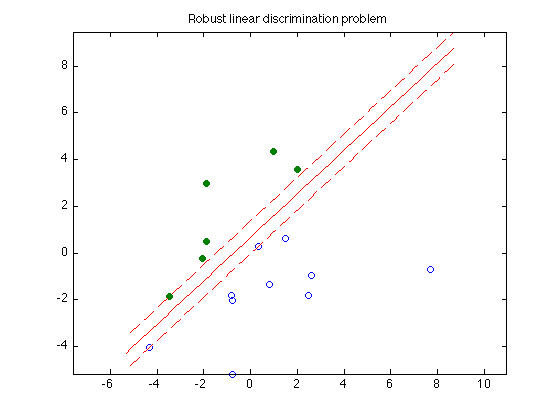

% Section 8.6.1, Boyd & Vandenberghe "Convex Optimization" % Original by Lieven Vandenberghe % Adapted for CVX by Joelle Skaf - 10/16/05 % (a figure is generated) % % The goal is to find a function f(x) = a'*x - b that classifies the points % {x_1,...,x_N} and {y_1,...,y_M} with maximal 'gap'. a and b can be % obtained by solving the following problem: % maximize t % s.t. a'*x_i - b >= t for i = 1,...,N % a'*y_i - b <= -t for i = 1,...,M % ||a||_2 <= 1 % data generation n = 2; randn('state',3); N = 10; M = 6; Y = [1.5+1*randn(1,M); 2*randn(1,M)]; X = [-1.5+1*randn(1,N); 2*randn(1,N)]; T = [-1 1; 1 1]; Y = T*Y; X = T*X; % Solution via CVX cvx_begin variables a(n) b(1) t(1) maximize (t) X'*a - b >= t; Y'*a - b <= -t; norm(a) <= 1; cvx_end % Displaying results linewidth = 0.5; % for the squares and circles t_min = min([X(1,:),Y(1,:)]); t_max = max([X(1,:),Y(1,:)]); tt = linspace(t_min-1,t_max+1,100); p = -a(1)*tt/a(2) + b/a(2); p1 = -a(1)*tt/a(2) + (b+t)/a(2); p2 = -a(1)*tt/a(2) + (b-t)/a(2); graph = plot(X(1,:),X(2,:), 'o', Y(1,:), Y(2,:), 'o'); set(graph(1),'LineWidth',linewidth); set(graph(2),'LineWidth',linewidth); set(graph(2),'MarkerFaceColor',[0 0.5 0]); hold on; plot(tt,p, '-r', tt,p1, '--r', tt,p2, '--r'); axis equal title('Robust linear discrimination problem'); % print -deps linsep.eps
Calling Mosek 9.1.9: 20 variables, 5 equality constraints
For improved efficiency, Mosek is solving the dual problem.
------------------------------------------------------------
MOSEK Version 9.1.9 (Build date: 2019-11-21 11:32:15)
Copyright (c) MOSEK ApS, Denmark. WWW: mosek.com
Platform: MACOSX/64-X86
Problem
Name :
Objective sense : min
Type : CONIC (conic optimization problem)
Constraints : 5
Cones : 1
Scalar variables : 20
Matrix variables : 0
Integer variables : 0
Optimizer started.
Presolve started.
Linear dependency checker started.
Linear dependency checker terminated.
Eliminator started.
Freed constraints in eliminator : 0
Eliminator terminated.
Eliminator - tries : 1 time : 0.00
Lin. dep. - tries : 1 time : 0.00
Lin. dep. - number : 0
Presolve terminated. Time: 0.00
Problem
Name :
Objective sense : min
Type : CONIC (conic optimization problem)
Constraints : 5
Cones : 1
Scalar variables : 20
Matrix variables : 0
Integer variables : 0
Optimizer - threads : 8
Optimizer - solved problem : the primal
Optimizer - Constraints : 4
Optimizer - Cones : 1
Optimizer - Scalar variables : 19 conic : 3
Optimizer - Semi-definite variables: 0 scalarized : 0
Factor - setup time : 0.00 dense det. time : 0.00
Factor - ML order time : 0.00 GP order time : 0.00
Factor - nonzeros before factor : 10 after factor : 10
Factor - dense dim. : 0 flops : 3.60e+02
ITE PFEAS DFEAS GFEAS PRSTATUS POBJ DOBJ MU TIME
0 1.0e+00 0.0e+00 2.0e+00 0.00e+00 1.000000000e+00 0.000000000e+00 1.0e+00 0.00
1 2.4e-01 2.2e-16 1.0e-01 1.75e+00 4.928262446e-02 -2.162170645e-01 2.4e-01 0.01
2 6.4e-02 8.9e-16 3.3e-02 9.56e-01 7.539605392e-02 -7.248178782e-03 6.4e-02 0.01
3 3.3e-02 4.4e-16 1.8e-02 -1.71e-01 1.780038238e-01 1.362995556e-01 3.3e-02 0.01
4 1.4e-02 8.9e-16 2.9e-03 1.16e+00 4.473413906e-01 4.211110196e-01 1.4e-02 0.01
5 2.0e-03 8.9e-16 1.8e-04 7.73e-01 5.002993976e-01 4.962765005e-01 2.0e-03 0.01
6 2.1e-05 4.0e-15 2.0e-07 9.67e-01 5.111203252e-01 5.110796674e-01 2.1e-05 0.01
7 6.6e-07 7.1e-15 1.1e-09 1.00e+00 5.112279286e-01 5.112266697e-01 6.6e-07 0.01
8 9.0e-08 1.2e-14 5.7e-11 1.00e+00 5.112297451e-01 5.112295759e-01 9.0e-08 0.01
9 6.4e-09 9.2e-14 1.1e-12 1.00e+00 5.112298887e-01 5.112298772e-01 6.4e-09 0.01
Optimizer terminated. Time: 0.01
Interior-point solution summary
Problem status : PRIMAL_AND_DUAL_FEASIBLE
Solution status : OPTIMAL
Primal. obj: 5.1122988874e-01 nrm: 1e+00 Viol. con: 9e-09 var: 5e-09 cones: 0e+00
Dual. obj: 5.1122987722e-01 nrm: 6e+00 Viol. con: 0e+00 var: 1e-13 cones: 0e+00
Optimizer summary
Optimizer - time: 0.01
Interior-point - iterations : 9 time: 0.01
Basis identification - time: 0.00
Primal - iterations : 0 time: 0.00
Dual - iterations : 0 time: 0.00
Clean primal - iterations : 0 time: 0.00
Clean dual - iterations : 0 time: 0.00
Simplex - time: 0.00
Primal simplex - iterations : 0 time: 0.00
Dual simplex - iterations : 0 time: 0.00
Mixed integer - relaxations: 0 time: 0.00
------------------------------------------------------------
Status: Solved
Optimal value (cvx_optval): +0.51123
